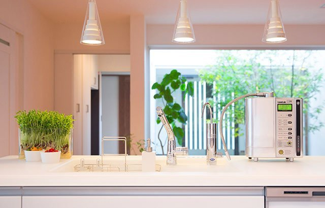
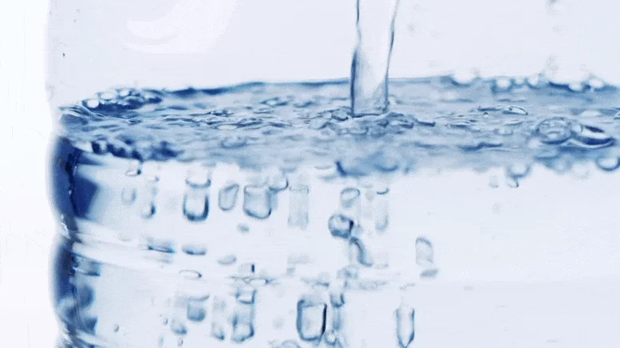

体验 Kangan Water 带来的健康生活方式
Kangan Water（还原水）是通过电解过程产生的碱性电解水，由Enagic公司的水机生成。这种水具有三个主要特性：
pH值在8.5-9.5之间，有助于平衡体内酸碱度
具有负ORP值，可以中和自由基
水分子结构更小，更容易被人体吸收

Enagic水机可以生成多种不同pH值的功能水，满足饮用、烹饪、清洁和美容等各种需求。

了解分子氢作为抗氧化剂的作用机制，以及富氢水对健康的潜在益处。
探索Enagic公司的高品质还原水机产品线，包括旗舰型号K8和其他系列。
利用来自冲绳的野生姜黄的力量，实现全方位健康。
Kangan Water具有负的氧化还原电位(ORP)值，这意味着它可以作为抗氧化剂，帮助中和体内的自由基。
一台Enagic水机可以生成多种不同pH值的功能水，满足家庭的各种需求。
探索Enagic还原水的世界，了解它如何成为您日常健康生活的一部分。